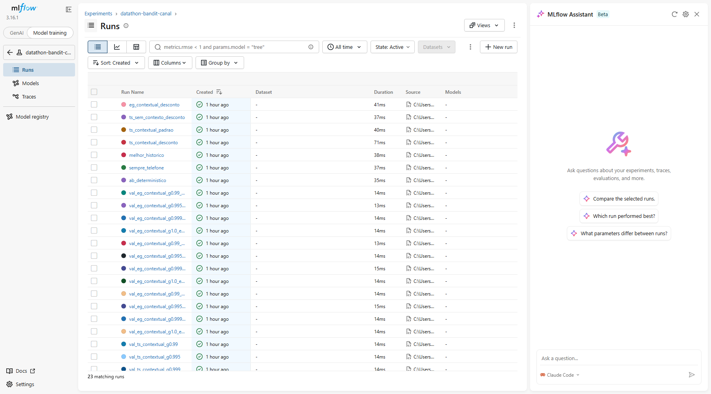

Thompson Sampling com esquecimento decidindo entre celular e telefone fixo, avaliado contra uma regra fixa com dados reais do Kaggle.
A cada cliente, o sistema olha o contexto, escolhe um canal, observa se converteu e atualiza a crença.
Contatos após limpeza
Conversão global de 11,3%
Removidas por vazamento
Só existem depois da decisão
Bandit
Braços: celular × telefone
Recompensa: 1 se assinou
Contexto: 6 segmentos
Celular 14,7% vs. telefone 5,2%, mas em 2008 só havia telefone (conversão 3–4%) e em 2010 a conversão chega a 45–57%. Por isso a avaliação é feita por bloco mensal.
Idade e resultado da campanha anterior definem o segmento
Amostra uma taxa da Beta de cada canal no segmento
Escolhe o canal com a maior taxa sorteada
Observa a conversão, atualiza a Beta e desconta o passado (γ)
Beta(1, 1) por segmento × canal
γ = 0,99 ≈ memória dos últimos ~100 eventos
ε-Greedy, TS sem contexto e baselines fixos
Replay off-policy (SNIPS) · 14.520 eventos de teste · IC 95% por bootstrap · critério pré-registrado: IC acima de zero
| Política | Conversão (SNIPS) | vs. A/B | IC 95% | |
|---|---|---|---|---|
| Sempre telefone | 15,02% | −4,99 pp | [−9,89; −3,03] | pior |
| ε-Greedy contextual | 18,38% | −1,65 pp | [−2,71; −0,65] | pior |
| A/B determinístico (baseline) | 20,02% | — | — | |
| TS contextual c/ esquecimento (servido) | 20,71% | +0,69 pp | [−0,57; +3,15] | não signif. |
| TS sem contexto c/ esquecimento | 21,87% | +1,86 pp | [+0,31; +5,20] | supera o A/B |
| Melhor histórico (sempre celular) | 24,40% | +4,38 pp | [+2,05; +8,99] | melhor |
TS com esquecimento supera o A/B com significância (+1,86 pp).
6 segmentos dividem os dados; com este volume, a personalização não é significativa.
O celular é o melhor canal em ~92% do teste. Com a resposta já conhecida, explorar custa tráfego.
O bandit se justifica quando o melhor canal é desconhecido ou muda com o tempo. Reportamos o resultado sem ajustes.
# sobe a API e o Prometheus docker compose up --build # cliente jovem, sem campanha anterior curl -X POST localhost:8000/recommend -H "Content-Type: application/json" \ -d '{"age": 25, "poutcome": "nonexistent"}' # cliente sênior que aceitou a campanha anterior (caso incerto) curl -X POST localhost:8000/recommend -H "Content-Type: application/json" \ -d '{"age": 65, "poutcome": "success"}'
Minimize e mostre: as duas chamadas no terminal ou em localhost:8000/docs
| Cliente | Recomendado | P(celular melhor) | Faz sentido? |
|---|---|---|---|
| Jovem, 25, sem campanha anterior | celular | 99,97% | sim |
| Adulto, 45, sem campanha anterior | celular | 97,1% | sim |
| Adulto, 40, aceitou a anterior | celular | 80,6% | sim |
| Sênior, 70, anterior falhou | celular | 65,5% | sim |
| Sênior, 65, aceitou a anterior | telefone | 37,1% | sim, baixa confiança |

Imagem em reports/figures/mlflow_ui.png não encontrada.
main roda 3 jobs/metrics: uso, erros, latênciaApiForaDoAr, TaxaDeErrosAlta, MuitasRecomendacoesIncertasOpcional: localhost:9090/alerts com o alerta de público incerto disparado
Dados brutos e artefatos (policy.json)
Treino e avaliação batch, registrando no MLflow gerenciado
Mesma imagem Docker da API, atrás do API Gateway
Respostas das campanhas voltam para atualizar as Betas
Novo policy.json publicado no S3
Mesmas métricas do Prometheus local, alarmes no SNS
Obrigado! Código, notebooks e README completo no repositório.